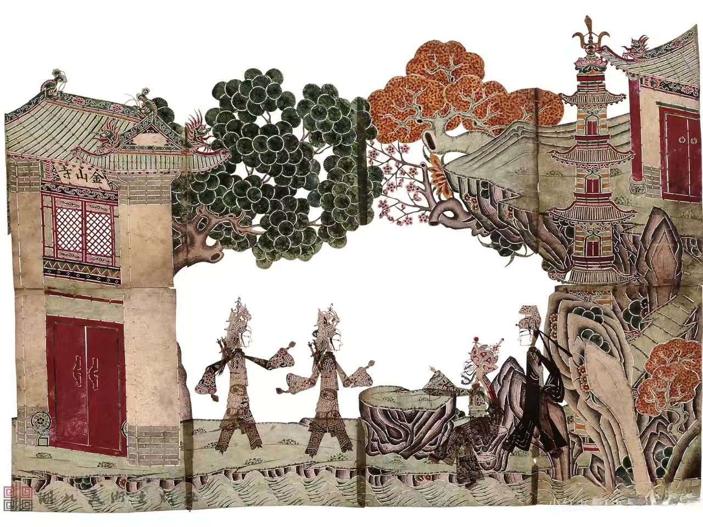
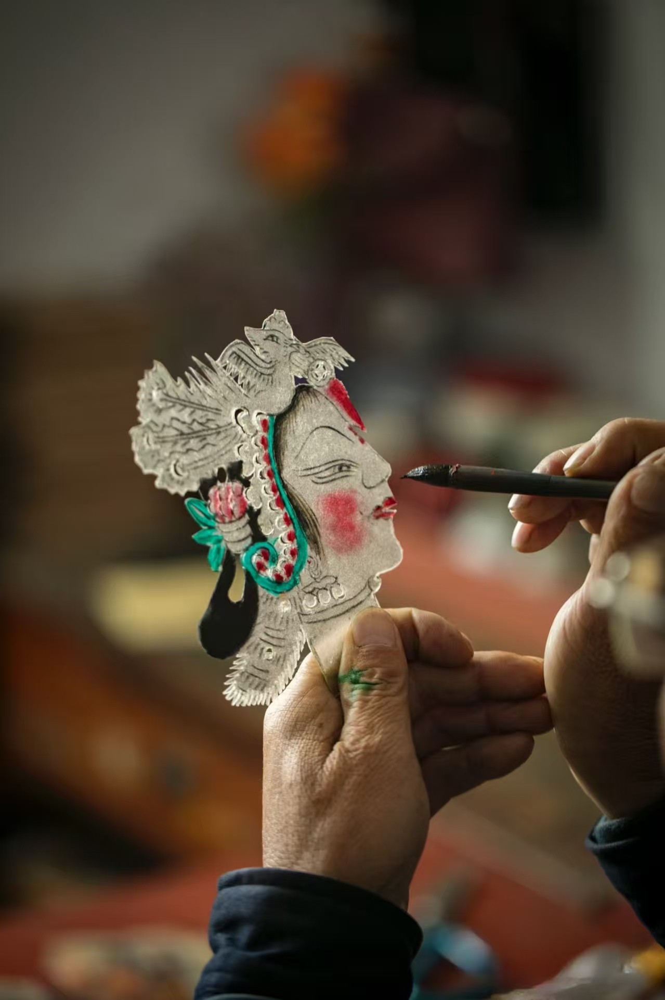
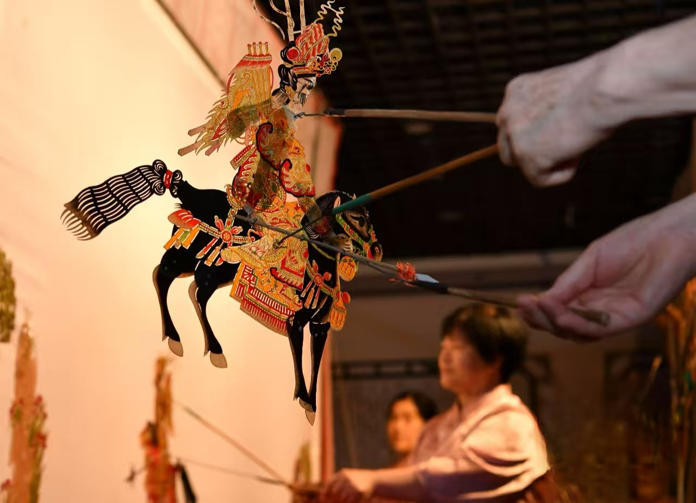
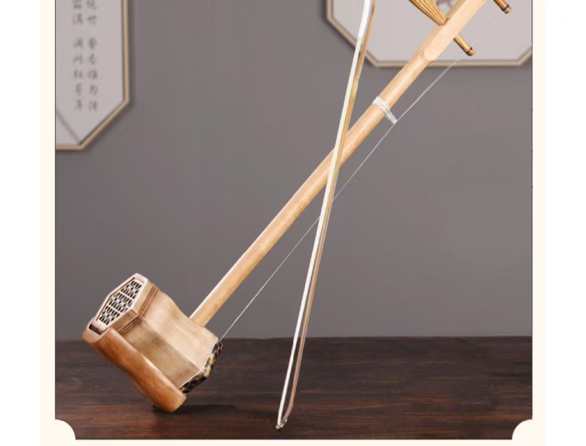
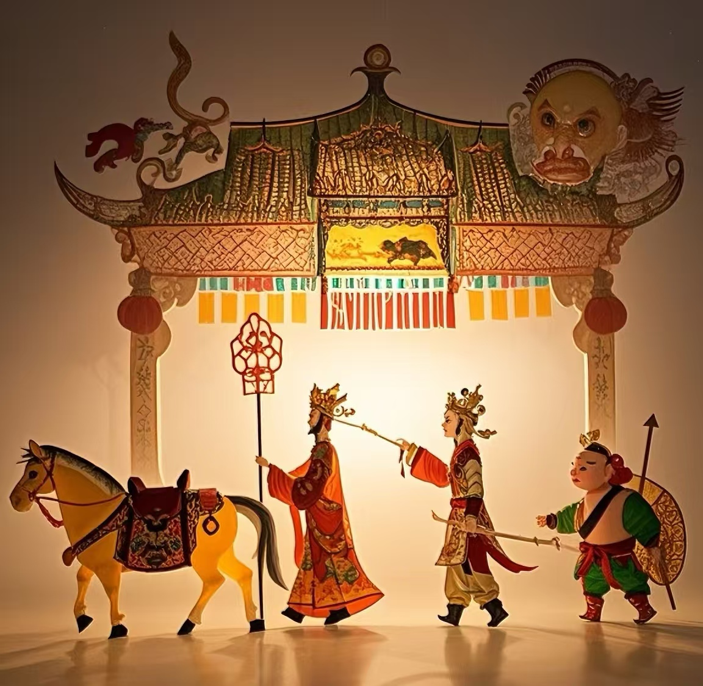
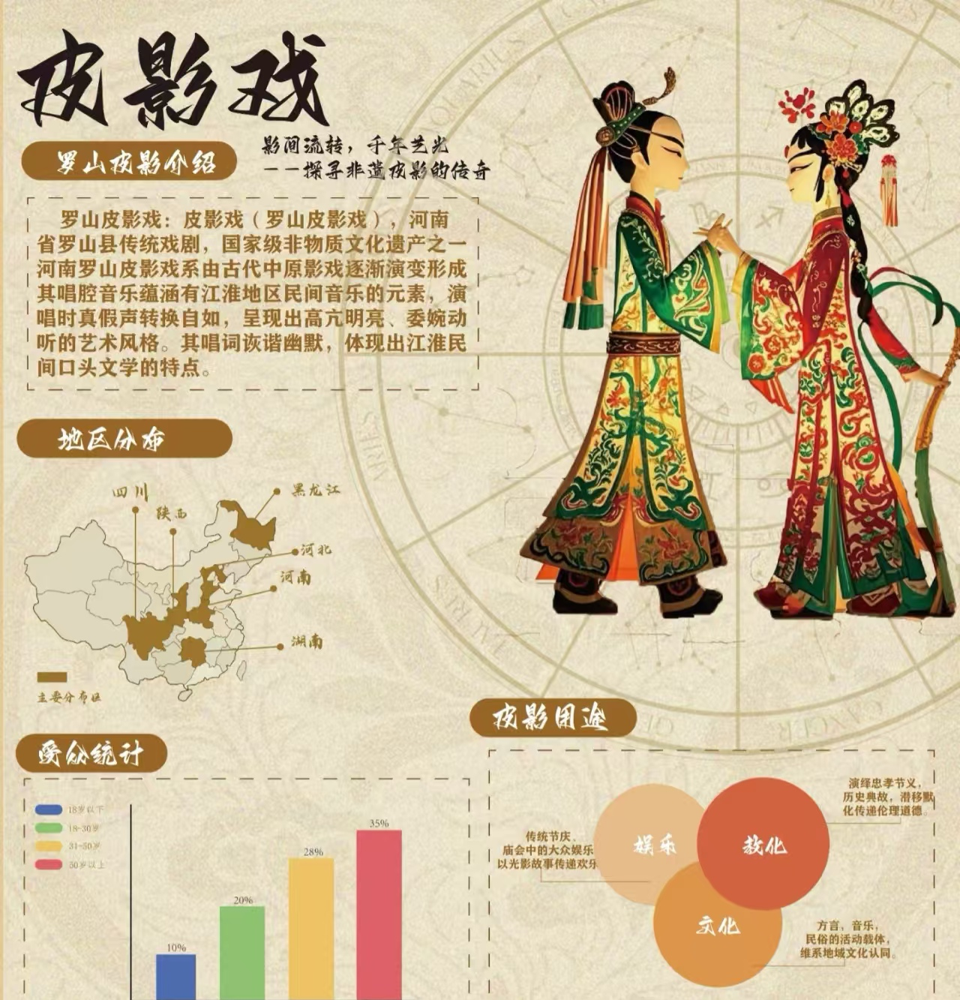

艺术特色
非遗皮影戏在长期发展过程中，形成了独特的艺术风格和鲜明的地方特色

造型特点
湖湘皮影造型夸张生动，线条流畅，具有浓郁的民间艺术特色。人物形象多为五分脸或七分脸，突出表现面部特征。
影人的头部、身躯、四肢等部分可以活动，表演时通过艺人的操纵，能够做出各种生动的动作和表情。

制作工艺
湖湘皮影的制作工艺十分复杂，主要包括选皮、制皮、画稿、雕刻、上色、熨平、装订等多道工序。
传统上多选用黄牛皮或驴皮制作，经过精细加工后，制成透明的皮料，再进行雕刻和彩绘，最后组装成完整的影人。

表演形式
湖湘皮影戏表演时，艺人们在白色幕布后面，一边操纵影人，一边用湖南方言配音演唱，同时配以乐器伴奏。
一个技艺精湛的艺人可以同时操纵多个影人，并能模仿各种人物的声音和动作，表现出丰富的情感和故事情节。

音乐特色
湖湘皮影戏的音乐具有浓郁的湖南地方特色，融合了湘剧、花鼓戏等地方戏曲的音乐元素，形成了独特的唱腔和曲调。
伴奏乐器主要有锣鼓、唢呐、二胡、笛子等，根据剧情需要，演奏出不同风格的音乐，增强表演的感染力。

剧目内容
湖湘皮影戏的剧目内容十分丰富，包括历史故事、民间传说、神话故事等。其中，以《封神演义》《西游记》等古典名著改编的剧目最为常见。
此外，还有许多反映湖南地方风情和民间生活的剧目，如《刘海砍樵》《打铜锣》等，深受当地群众喜爱。

地域流派
湖湘皮影戏在长期发展中，形成了多个地域流派，主要有长沙皮影、衡阳皮影、常德皮影、邵阳皮影等。
各流派在造型、唱腔、表演等方面都有自己的特色，如长沙皮影造型精美，唱腔婉转；衡阳皮影动作夸张，风格粗犷。
探索皮影角色
点击选择角色：

英雄角色
英雄角色是湖湘皮影戏中最常见的角色类型之一，多表现为勇敢、正义、忠诚的人物形象。造型上通常身材魁梧，服饰华丽，面部表情刚毅。常见的英雄角色有岳飞、关羽、武松等历史或文学作品中的英雄人物。在表演中，英雄角色的动作刚劲有力，体现出英勇无畏的气质。